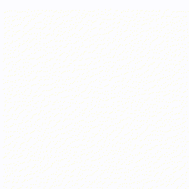

综合性技术知识库 —— 图像信号处理 / 计算机视觉 / 计算机图形学（3DGS · NeRF）/ 人工智能，汇聚技术总结与开源实践。
A technical knowledge base covering Image Signal Processing, Computer Vision, Graphics and AI, built for developers, researchers and enthusiasts.
PixelCraft 以“原理深度 + 工程落地”的方式组织内容，多数页面提供 中文 | English 双语切换。
相机成像链路：从传感器 Raw 到可视图像的核心算法与调优。
从几何与视频处理视角看视觉算法：稳定、拼接、重建。
神经渲染与显式表示两大路线：NeRF 与 3D Gaussian Splatting。
从 Transformer 组件到大模型推理、多模态与具身智能的实践总结。
以作者身份参与撰写的专业书籍，均收录于机械工业出版社“工程科技数字图书馆”。
架起从三维视觉理论通往神经渲染实战的桥梁。系统解析从多视图几何到神经隐式表示的演进逻辑：坐标变换与投影映射、体渲染流水线、NeRF 位置编码与分层采样、NerfStudio 训练闭环、3DGS 可微光栅化与密度控制，并延伸至三维模型提取与 Blender 插件等产业应用。全书 8 章，配合丰富代码注解与可视化案例。
Intel 音视频团队与图像处理专家联合撰写。深入解析 OpenCV DNN 模块架构与实现原理，覆盖 GPU（OpenCL / Vulkan）、CPU（指令集 SIMD / Halide / OpenVINO）加速与性能优化工具（TensorBoard / Netscope / VTune），并给出完整的人脸活体检测项目与主流识别项目实战解析。
PixelCraft 内置可运行的演示代码，帮助理解大模型核心组件。
宗炜 Zong Wei，现居北京，就职于 Intel，长期深耕图像信号处理（ISP）、计算机视觉与性能优化，并持续投入神经渲染（NeRF / 3DGS）与大模型推理的工程实践。代表作：PixelCraft 技术知识库、《三维重建技术与实践》等专著。开源代码见 github.com/zongwave。